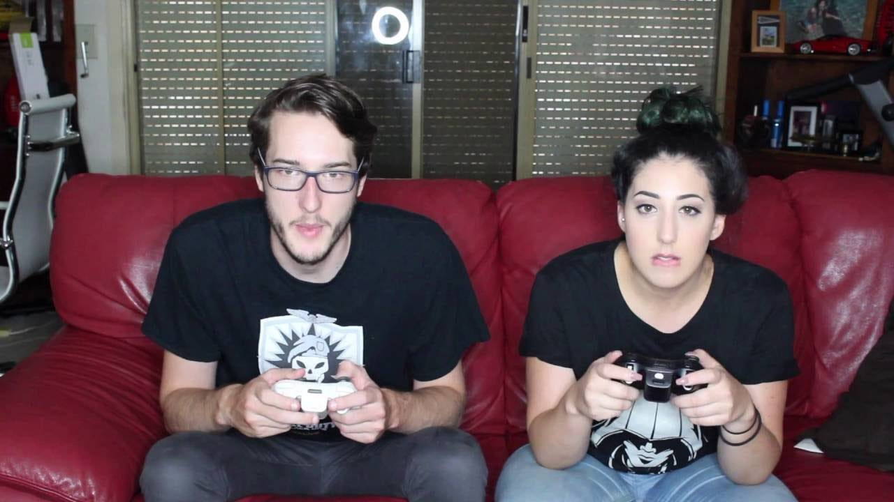

This publishing experiment for couples and these Gaming Experiences


Watching this picture below reminded me of this game for couples and provided me the idea of experimenting with a new publishing model for Book Dojo that tries to empower couples from every corner of the world and made by people of different genres, horizons, and visions. This can be seen as the first step for getting outside the building for knowing how to empower couples because Godda Game the sister startup of Book Dojo needs to know more about building gaming experiences that empower couples and strengthen the link and relation that stick them together.
I am an alone CEO at dawn but I do understand that sentimentally being alone is not easy at all and I believe that it is better for US human beings to connect in couples emotionally.
This publishing experiment and the coming gaming experiences for couples that will come from it couldn’t be successful without understanding emotions. I hope you know how emotions play for marketing products, services, and even yourself. I have already written about emotions in marketing because I had the opportunity to connect with great thoughts leaders who had the courage, perseverance, and bravery to share their thoughts with us through the medium of books. But As you can see I am still learning about emotions and hope you too.
Thank you Maddi for this amazing channel, this amazing picture as cover, and this amazing video below
PS: This publishing experiment is an asset for Book Dojo but the outcomes are used by Godda Games for producing better games.